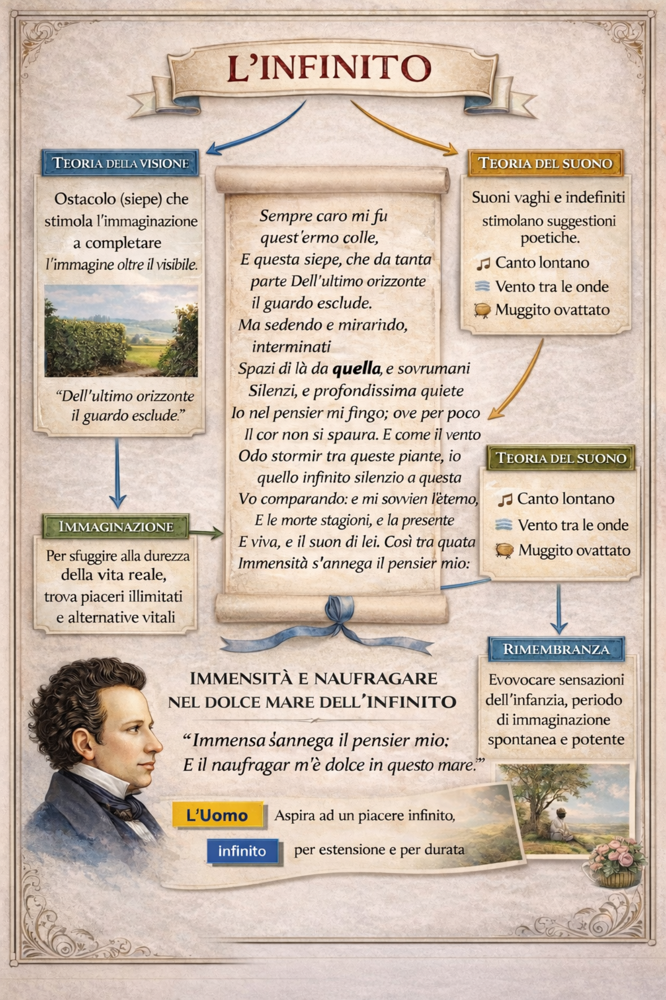

L’INFINITO – GIACOMO LEOPARDI
Sempre caro mi fu quest’ermo colle,
E questa siepe, che da tanta parte
Dell’ultimo orizzonte il guardo esclude.
Ma sedendo e mirando, interminati
Spazi di là da quella, e sovrumani
Silenzi, e profondissima quiete
Io nel pensier mi fingo; ove per poco
Il cor non si spaura. E come il vento
Odo stormir tra queste piante, io quello
Infinito silenzio a questa voce
Vo comparando: e mi sovvien l’eterno,
E le morte stagioni, e la presente
E viva, e il suon di lei. Così tra questa
Immensità s’annega il pensier mio:
E il naufragar m’è dolce in questo mare.
1. Il punto di partenza: un colle, una siepe, un limite

L’Infinito, scritto nel 1819, è uno degli idilli più celebri di Giacomo Leopardi e rappresenta il momento più puro della sua poetica del vago e dell’indefinito. Il testo poetico si apre con un’immagine concreta e semplice: «Sempre caro mi fu quest’ermo colle, / e questa siepe, che da tanta parte / dell’ultimo orizzonte il guardo esclude».
Il punto di partenza non è l’infinito, ma un limite. Non è l’immensità, ma una siepe. L’ostacolo visivo non è un impedimento negativo: è la condizione necessaria perché l’immaginazione si attivi.
Qui entra in gioco la teoria della visione, centrale nella poetica leopardiana: quando la vista è incompleta, quando qualcosa sfugge allo sguardo, la mente interviene per colmare il vuoto. Se vedo tutto, non immagino nulla. Se non vedo, inizio a creare. La siepe, dunque, non chiude il mondo: lo apre.
2. L’immaginazione: fingere per accedere all’infinito
Seduto sul colle, il poeta compie un gesto decisivo: «Ma sedendo e mirando, interminati / spazi di là da quella, e sovrumani / silenzi, e profondissima quiete / io nel pensier mi fingo».
Il verbo fingo non significa mentire, ma creare. Leopardi sa che l’infinito non è percepibile dai sensi: lo costruisce mentalmente. È un atto poetico e insieme filosofico.
Qui si manifesta il nucleo del sensismo leopardiano: tutto nasce dai sensi, ma i sensi non bastano. L’uomo desidera un piacere infinito per estensione e durata; la realtà gli offre solo frammenti. L’immaginazione diventa allora l’unico spazio in cui l’infinito può essere vissuto, anche se solo per un istante.
Questo momento non è semplice evasione: è una forma di esperienza intensa, quasi vertiginosa. Il cuore «per poco non si spaura». L’infinito non consola subito: prima inquieta.
3. La teoria del suono: il vento e il tempo
Accanto alla visione, Leopardi attiva la teoria del suono. Il fruscio del vento tra le piante diventa confronto tra finito e infinito: «E come il vento / odo stormir tra queste piante, io quello / infinito silenzio a questa voce / vo comparando».
Il suono è reale, concreto, presente. Ma proprio questo suono risveglia il pensiero dell’eterno: «E mi sovvien l’eterno, / e le morte stagioni, e la presente / e viva, e il suon di lei».
Il vento diventa ponte tra spazio e tempo. Non c’è solo un infinito spaziale (gli “interminati spazi”), ma anche un infinito temporale: l’eterno, le stagioni morte, il presente che scorre.
Qui si avverte già l’ombra del pessimismo storico: il tempo consuma tutto. La memoria richiama il passato, ma lo fa come perdita.
4. Il naufragio: perdersi per esistere
Il testo si chiude con uno dei versi più celebri della poesia italiana: «Così tra questa / immensità s’annega il pensier mio: / e il naufragar m’è dolce in questo mare».
Il naufragio è una metafora decisiva. Non è distruzione violenta, ma abbandono consapevole. Il pensiero si dissolve nell’immensità, e proprio in questo dissolversi trova una forma di dolcezza.
Non si tratta di una fuga dalla realtà. È un’esperienza limite: l’io finito entra in contatto con qualcosa che lo supera. L’infinito non è possesso, è immersione. L’io non domina l’infinito: vi si perde. Ma questo perdersi è, paradossalmente, una forma di piacere.
5. L’Infinito nella visione complessiva di Leopardi
Per comprendere pienamente L’Infinito, occorre inserirlo nel percorso del pensiero leopardiano.
Nella fase del pessimismo storico, Leopardi ritiene che l’infelicità nasca dalla perdita delle illusioni causata dalla civiltà. In questo periodo la Natura può ancora apparire come madre benigna, capace di offrire consolazione attraverso l’immaginazione.
L’Infinito appartiene a questo momento: qui l’immaginazione funziona ancora come medicina. Successivamente, con il pessimismo cosmico, Leopardi giungerà a una visione più radicale: la Natura non è madre, ma forza cieca e indifferente. In opere come il Dialogo della Natura e di un Islandese, l’illusione non consola più.
In L’Infinito, invece, l’illusione poetica è ancora possibile. È fragile, momentanea, ma reale nell’esperienza interiore.
6. Il significato profondo: il desiderio umano di infinito
L’Infinito non parla solo di un paesaggio marchigiano. Parla dell’uomo.
L’uomo aspira a un piacere infinito per estensione e per durata. Nessuna realtà concreta può soddisfarlo. Ogni oggetto finito delude. L’immaginazione, invece, non ha confini.
Il limite (la siepe) diventa allora simbolo della condizione umana: siamo finiti, ma pensiamo l’infinito. Siamo immersi nel tempo, ma concepiamo l’eterno. Siamo fragili, ma desideriamo ciò che non finisce.
L’Infinito mostra che la grandezza dell’uomo non sta nel dominare il mondo, ma nel pensarlo oltre i suoi limiti.
7. Conclusione
L’Infinito è insieme poesia, filosofia ed esperienza esistenziale. Attraverso un colle, una siepe e un vento leggero, Leopardi costruisce una meditazione sul limite e sull’immensità.
La vista interrotta genera immaginazione.
Il suono vago genera memoria.
Il pensiero genera infinito.
E nel momento in cui l’io si perde, scopre una dolcezza inattesa: il naufragio non come sconfitta, ma come immersione nel mistero più grande della condizione umana.
Vocabolario essenziale – L’Infinito di Leopardi
Ermo colle – Colle solitario e appartato. Simbolo di isolamento fisico e contemplazione interiore.
Siepe – Elemento che limita la vista ma stimola l’immaginazione. Motivo centrale della poetica dell’indefinito.
Ultimo orizzonte – Confine visibile del mondo. L’ostacolo (siepe) ne impedisce la vista, permettendo però di immaginarlo.
Interminati spazi – Visione dell’infinito spaziale. Esprime il desiderio umano di superare i limiti sensibili.
Sovrumani silenzi – Silenzio che va oltre l’umano, carico di suggestione e mistero. Attiva una dimensione spirituale e sconfinata.
Profondissima quiete – Calma assoluta, quasi mistica. Stato mentale che predispone alla contemplazione dell’eterno.
Fingo – Dal latino “fingere”: immaginare, creare. Non è menzogna, ma attività poetica e visionaria.
Morte stagioni – Il passato, che non è più. Ricordo di epoche ormai svanite.
Presente e viva – Il tempo attuale, ancora vissuto ma effimero. Contrapposto al passato e all’eterno.
Naufragar – Perdersi dolcemente nell’infinito. Abbandono consapevole del proprio io finito in una dimensione più grande.
Mare – Simbolo dell’infinito, dello spazio senza confini. È anche metafora della mente che contempla l’eterno.